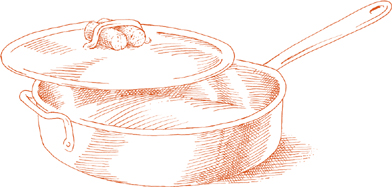

Пикката — это термин, который рестораны часто используют для описания жареной телятины скалоппине, политой лимонным соком. Подобная процедура применяется и к телячьей печени. Если возможно, это даже более изысканное блюдо, чем версия со скалоппине. Это, безусловно, одно из самых свежих и легких блюд, которые можно приготовить из печени.
На 4 порции
450 г телячьей печени, светло-розового цвета, нарезанной ломтиками толщиной не более 0,6 см
1 столовая ложка растительного масла
3 столовые ложки сливочного масла
Мука, выложенная на тарелку
Соль
Черный перец, свежемолотый
3 столовые ложки свежевыжатого лимонного сока
1 столовая ложка нарезанной петрушки
1. Удалите любую тонкую, жесткую пленку, которая может остаться на печени. Она будет сжиматься во время приготовления и не даст печени лежать ровно на сковороде. Если вы найдете крупные белые хрящевые трубочки, удалите и их.
2. Положите оливковое масло и 2 столовые ложки сливочного масла в большую сковороду и включите средний огонь. Когда пена от масла утихнет, быстро обваляйте печень в муке с обеих сторон и положите в сковороду столько кусочков, сколько поместится свободно, без переполнения и наложения. Готовьте печень около ½ минуты с каждой стороны, затем перенесите на теплую тарелку, используя шумовку или лопатку, и посыпьте солью и перцем. Повторяйте процедуру, пока все кусочки печени не будут готовы и не окажутся на тарелке.
3. Добавьте лимонный сок и оставшуюся 1 столовую ложку масла в сковороду на среднем огне. Быстро перемешайте 2 или 3 раза, используя деревянную ложку, чтобы собрать остатки пищи со дна и стенок сковороды. Верните всю печень в сковороду одновременно, переверните кусочки лишь на короткое время, чтобы покрыть их, затем перенесите печень и соки из сковороды на теплое блюдо, посыпьте петрушкой и подавайте немедленно.
ПЕЧЕНЬ ВЕНЕЦИАНСКОМ СТИЛЕ, fegato alla veneziana, это не просто печень с луком. Лук, конечно, является необходимой частью, но действительно важно, чтобы печень была бледно-розовой, кремовой и свободной от жестких, жевательных трубочек, потому что она берется от очень молодого теленка, чтобы ее нарезали на равномерные кусочки толщиной не более ¼ дюйма, и чтобы ее быстро обжаривали на сильном огне. Чтобы правильно приготовить печень, в сковороде не должно быть более одного слоя за раз, потому что в этом случае она будет тушиться, становясь жесткой, горькой и серой; ее нужно раскладывать по широкой сковороде и готовить так быстро на таком сильном огне, чтобы она не успела потерять свои сладкие соки.
Существует одна традиционная особенность fegato alla veneziana, которую можно игнорировать, не нарушая превосходства блюда. Венецианские мясники нарезают тонкие ломтики печени на полоски шириной 1-1½ дюйма, и если вы приглашаете венецианцев на ужин, возможно, вы захотите сделать именно так. Я считаю более практичным оставить кусочки целыми; это облегчает их переворачивание во время приготовления и позволяет лучше контролировать равномерное приготовление всей печени.
На 6 порций
1½ фунта (675 г) телячьей печени, бледно-розовой, нарезанной на кусочки толщиной не более ¼ дюйма
3 столовые ложки растительного масла
3 чашки лука, нарезанного очень-очень тонко
Соль
Черный перец, свежемолотый
1. Удалите любую тонкую, жесткую пленку, которая может остаться на печени. Она будет сжиматься во время приготовления и не позволит печени лежать ровно в сковороде. Если вы найдете какие-либо крупные белые жесткие трубочки, удалите и их.
2. Выберите свою самую большую сковороду или сковороду для обжаривания, положите масло, лук и соль, и включите средний низкий огонь. Готовьте лук 20 минут или более, пока он полностью не станет мягким и не приобретет ореховый коричневый цвет.
3. Уберите лук из сковороды, используя шумовку или лопатку, и отложите в сторону. Не удаляйте масло. Увеличьте огонь до максимума, и когда масло станет очень горячим, положите столько кусочков печени, сколько поместится свободно, без перекрытия. Скорее всего, все кусочки не поместятся сразу, поэтому будьте готовы готовить их партиями. Как только печень потеряет свой сырой цвет, переверните ее и готовьте еще всего несколько секунд. Перенесите первую партию готовой печени на теплую тарелку, используя шумовку или лопатку, и посыпьте солью и перцем. Повторяйте процесс, пока все кусочки не будут готовы, затем верните печень обратно в сковороду.
4. Быстро положите лук обратно в сковороду, пока огонь все еще горит, переверните лук и печень один раз полностью, затем перенесите все содержимое сковороды на сервировочное блюдо и подавайте немедленно.
Примечание заранее  Вы можете завершить рецепт до этого момента за несколько часов до подачи.
Вы можете завершить рецепт до этого момента за несколько часов до подачи.
ПАНИРОВАНИЕ — ЭТО ОДНО из самых желаемых способов приготовления печени, нарезанной тонкими ломтиками в итальянском стиле. Это защищает печень от потери влаги, а хрустящая корочка очень приятно контрастирует с мягкостью молодой печени, когда она идеально приготовлена.
На 6 порций
2 столовые ложки растительного масла
2 столовые ложки сливочного масла
1½ фунта (675 г) телячьей печени, нарезанной ломтиками не толще ¼ дюйма (0.6 см)
¾ чашки мелких, сухих, безвкусных панировочных сухарей, слегка поджаренных в духовке или на сковороде
Соль
Черный перец, свежемолотый
Дольки лимона на столе
1. Удалите тонкую жесткую пленку, которая может остаться на печени. Она будет сжиматься во время приготовления и не даст печени лежать ровно на сковороде. Если вы найдете крупные белые хрящевые трубки, удалите и их.
2. Положите масло и сливочное масло в большую сковороду и включите средний огонь. Обваляйте кусочки печени в панировочных сухарях с обеих сторон, прижимая печень к сухарям ладонями. Удалите излишки сухарей, и как только пена от масла начнет утихать, положите кусочки на сковороду. Не кладите больше, чем поместится свободно, без наложения.
3. Готовьте печень до образования хрустящей корочки с одной стороны, затем переверните на другую. В общей сложности это займет около 1 минуты. Пока вы готовите одну партию кусочков, переложите их с помощью шумовки или лопатки на решетку для охлаждения, чтобы стек лишний жир, или на тарелку, выстланную бумажными полотенцами. Посыпьте солью и перцем, и положите другую партию в сковороду, повторяя ту же процедуру, пока все кусочки не будут готовы. Переложите на теплую тарелку и подавайте немедленно.
ПлЕНКА — ЭТО МЯГКАЯ, сетчатая мембрана, которая окружает кишечник свиньи. Она медленно растворяется на горячем огне, в конечном итоге почти полностью исчезая, тем самым действуя как натуральный агент для запекания мяса, которое нужно защитить от высыхания. Печень, жареная в пленке, несравнима по своей сочности и сладости.
Пленку можно найти у мясников, специализирующихся на свежей свинине, или ее можно заказать у них. Она недорогая и прекрасно замораживается, поэтому, когда вы ее найдете, стоит купить ее в большом количестве. Если при замораживании вы разделите ее на несколько частей, будет проще использовать ее в последующие разы.
На 6 порций
Около 1 фунта (450 г) свежей или размороженной пленки, в одном или нескольких кусках
1½ фунта (700 г) телячьей или свиной печени, нарезанной на куски толщиной около 1 дюйма (2.5 см), длиной 3 дюйма (7.5 см) и шириной 2 дюйма (5 см)
Соль
Черный перец, свежемолотый
Целые лавровые листья
Прочные круглые зубочистки
Предпочтительно угольный или газовый гриль с лавовыми камнями
1. Если вы используете внутренний гриль, разогрейте его за 15 минут до приготовления. Если используете уголь, разожгите его заранее, чтобы он покрылся белой золой перед приготовлением.
2. Замочите оболочку в теплой воде на 5 минут, пока она не станет мягкой и рыхлой. Промойте в нескольких сменах воды. Положите мембрану на сухую ткань и осторожно раскройте. Нарежьте лучшие части на прямоугольники 5 на 7 дюймов (13 см на 18 см). Не тратьте время на мелкие кусочки, которые нужно латать.
3. Удалите кожу или жесткие, открытые трубки с печени. Промойте ее в холодной воде и тщательно высушите с помощью ткани или бумажных полотенец. Щедро посыпьте солью и перцем. Положите по листу лавра на каждый кусок и оберните один из прямоугольников оболочки вокруг печени, подгибая концы. Закрепите обертку на печени зубочисткой.
4. Поместите печень и свертки оболочки в гриль или на решетку. Переверните их через 2-3 минуты и готовьте с другой стороны еще 2 минуты, в зависимости от интенсивности жара. Когда будет готово, печень должна оставаться розовой и влажной внутри; если вы сомневаетесь, разрежьте один кусок, чтобы проверить. Подавайте горячими, позволяя вашим гостям самим извлекать зубочистки.
На 6 порций
1½ фунта (700 г) куриной печени
2 столовые ложки сливочного масла
2 столовые ложки лука, очень мелко нарезанного
1 дюжина свежих листьев шалфея
⅓ чашки сухого белого вина
Соль
Черный перец, свежемолотый
1. Внимательно осмотрите печень на наличие желтовато-зеленых пятен и удалите их. Уберите любые кусочки жира, промойте печень в холодной воде, затем тщательно обсушите с помощью ткани или бумажных полотенец.
2. Положите масло и лук на сковороду и включите средний огонь. Готовьте и помешивайте лук, пока он не станет светло-золотистым. Затем увеличьте огонь до максимума и добавьте листья шалфея и куриную печень. Готовьте 1-2 минуты, часто переворачивая печень, пока она не потеряет свой сырой красный цвет. Переложите их на теплую тарелку, используя шумовку или лопатку.
3. Добавьте вино на сковороду и дайте ему быстро покипеть 20-30 секунд, используя деревянную ложку, чтобы соскоблить остатки пищи с дна и стенок сковороды. Добавьте в сковороду любую жидкость, которую печень могла выделить на тарелке, и выпарите ее.
4. Верните печень на сковороду на короткое время, быстро перевернув их один-два раза. Добавьте соль и перец, переверните их еще раз, затем переложите вместе со всеми соками на теплое блюдо и подавайте немедленно.
ХЛЕБ раньше был другим способом сказать «кусочек», и сладкий кусочек — это точное описание этой самой восхитительной части анатомии животного. Иногда грубая, волокнистая поджелудочная железа выдается за сладкие железы, но настоящие сладкие железы — это тимус, железа в горле и груди молодых животных, которая исчезает по мере взросления животного. У этой железы есть две части: «горло» и «сердце». Последнее больше, имеет более регулярную форму и меньше жира, и если есть выбор, оно предпочтительнее, но «горловые» сладкие железы почти так же хороши.
В данном варианте сладкие железы отвариваются, затем обжариваются в масле и оливковом масле, а затем готовятся с помидорами и горошком. Многие овощи хорошо сочетаются с этим кремообразным мясом, но ни один не подходит так хорошо, как горошек, чья молодость и сладость естественно соответствуют сладким железам.
На 4-6 порций
1½ фунта (700 г) телячьих сладких желез
Небольшая морковь, очищенная
1 стебель сельдерея
1 столовая ложка винного уксуса
Соль
3 столовые ложки масла
1 столовая ложка растительного масла
2½ столовые ложки нарезанного лука
⅔ чашки консервированных импортных итальянских помидоров «сливка», нарезанных крупно, с соком
2 фунта (900 г) свежего молодого горошка ИЛИ 1 упаковка (280 г) замороженного мелкого молодого горошка, размороженного
Черный перец, свежемолотый из мельницы
1. Работая под холодной проточной водой, удалите как можно больше мембраны, окружающей потроха. Это требует немного терпения, но почти вся мембрана должна отойти. Когда закончите, промойте очищенные потроха в холодной воде и дайте стечь.
2. Налейте в кастрюлю достаточно воды, чтобы позже полностью покрыть потроха. Добавьте морковь, сельдерей, уксус и соль, и доведите до кипения. Добавьте потроха и отрегулируйте огонь, чтобы готовить на самом медленном кипении. Через 5 минут достаньте потроха и, пока они еще теплые, удалите оставшиеся кусочки мембраны. Когда остынут и станут более плотными, нарежьте на небольшие кусочки размером около 2.5 см.
3. Положите масло, масло и лук в сковороду, включите средний огонь, готовьте и помешивайте лук, пока он не станет светло-золотистым, затем добавьте потроха. Готовьте, переворачивая, пока они не станут светло-коричневыми со всех сторон. Добавьте соль и нарезанные помидоры с соком, и отрегулируйте огонь, чтобы готовить на очень медленном кипении.
4. Если используете свежий горошек, очистите его и добавьте в сковороду после того, как помидоры покипят 15 минут. Если используете замороженный горошек, добавьте размороженный горошек после того, как помидоры покипят 30 минут. Добавьте перец и тщательно перемешайте все ингредиенты. Накройте крышкой и готовьте на медленном, но постоянном кипении, пока горошек не станет мягким, если используете свежий, или в течение 5 минут, если используете замороженный.
5. Переложите все содержимое сковороды на теплую тарелку и подавайте сразу. Если вы заметили, что соки из сковороды слишком водянистые, переложите только потроха, используя шумовку или лопатку, быстро уменьшите соки в открытой сковороде на сильном огне, затем вылейте содержимое сковороды на потроха.
Заметка заранее Вы можете завершить рецепт до этого момента даже за день до подачи, но не нарезайте потроха на кусочки. Храните в холодильнике, плотно завернув в пленку или в герметичном пластиковом пакете. Нарежьте на кусочки, когда они остынут в холодильнике, но дайте им достичь комнатной температуры перед следующим шагом.
МЕТОД, который повара Тревизо используют для этого исключительно простого и мягкого рецепта почек, отклоняется от обычной процедуры, когда они кратковременно нагревают почки в сковороде отдельно, прежде чем обжаривать их с луком. Таким образом, они извлекают и выбрасывают часть жидкости, ответственной за резкость, которая иногда является нежелательной составляющей вкуса почек.
На 4 порции
16 почек ягненка
⅓ чашки винного уксуса
1 столовая ложка растительного масла
3 столовые ложки сливочного масла
½ чашки мелко нарезанного лука
3 столовые ложки мелко нарезанной петрушки
Соль
Черный перец, свежемолотый
1. Разрежьте почки пополам и промойте их в холодной воде. Поместите их в миску с уксусом и достаточным количеством холодной воды, чтобы полностью покрыть. Замочите их не менее чем на 30 минут, затем слейте воду.
2. Нарежьте почки очень тонкими ломтиками, которые будут напоминать нарезанные шляпки грибов. Когда дойдете до беловатого ядра, нарежьте вокруг него и выбросьте ядро.
3. Поместите почки в сковороду и включите средний огонь. Готовьте их около 2 минут, постоянно помешивая, пока они не потеряют свой сырой цвет и не станут сероватыми, а также не выделят темно-красную жидкость. Уберите почки из сковороды, выбросив всю жидкость. Поместите их в проволочную сетку или дуршлаг и промойте под струей холодной воды. Слейте и тщательно высушите бумажными полотенцами.
4. Промойте сковороду и вытрите ее насухо. Вложите масло, сливочное масло и лук, и включите средний огонь. Готовьте, помешивая лук, пока он не станет светло-золотистым. Добавьте почки, перемешайте 2 или 3 раза, чтобы хорошо их покрыть, затем добавьте петрушку. Готовьте 1 или 2 минуты, часто помешивая. Добавьте соль и перец, снова перемешайте, полностью перевернув почки, затем переложите их на теплое блюдо со всеми соками из сковороды и подавайте сразу же.
На 6 порций
2 дюжины почек ягненка
⅓ чашки винного уксуса
¼ чашки оливкового масла первого холодного отжима
3 столовые ложки мелко нарезанного лука
½ чайной ложки мелко нарезанного чеснока
3 столовые ложки мелко нарезанной петрушки
Соль
Черный перец, свежемолотый
½ чайной ложки кукурузного крахмала, смешанного с ¾ чашки сухого белого вина
1. Разрежьте почки пополам и промойте их в холодной воде. Поместите их в миску с уксусом и достаточным количеством холодной воды, чтобы полностью покрыть. Замочите их не менее чем на 30 минут, слейте и тщательно обсушите бумажными полотенцами.
2. Нарежьте почки очень тонкими ломтиками, которые будут напоминать нарезанные шляпки грибов. Когда дойдете до беловатого ядра, нарежьте вокруг него и выбросьте ядро.
3. Положите оливковое масло и лук в сковороду, включите средний огонь и обжаривайте лук, пока он не станет светло-золотистым. Добавьте чеснок. Быстро перемешайте 2 или 3 раза, добавьте петрушку, перемешайте один раз, затем добавьте почки. Тщательно перемешайте, чтобы хорошо покрыть почки, добавьте соль и перец, и снова перемешайте. Почки должны готовиться быстро на сильном огне, иначе они станут жесткими. Как только они потеряют свой сырой красный цвет, переложите их на теплую тарелку, используя шумовку или лопатку.
4. Добавьте вино и кукурузный крахмал в сковороду, и пока вино быстро кипит в течение 15 или 20 секунд, используйте деревянную ложку, чтобы соскабливать остатки пищи со дна и стенок сковороды. Когда соки из сковороды начнут загустевать, верните почки в сковороду, используя шумовку или лопатку, чтобы оставить позади любую жидкость, которую они могли выделить. Переверните почки один или два раза, чтобы хорошо покрыть их, затем переложите их вместе со всеми соками из сковороды на теплое блюдо и подавайте сразу.
ЭТО самый популярный способ приготовления мозгов в Италии. Мозги сначала отвариваются с овощами, нарезаются, когда остывают, и обжариваются в кляре из яйца и панировочных сухарей. Обжаривание подчеркивает их изысканную текстуру: при укусе тонкая золотистая корочка ломается, открывая нежное внутреннее содержимое.
На 4 порции
1 телячьи мозги, около 1 фунта (450 г)
1 средняя морковь, очищенная
½ луковицы, очищенной
½ стебля сельдерея
1 столовая ложка винного уксуса
Соль
1 яйцо
1 чашка мелких, сухих, безвкусных панировочных сухарей, слегка поджаренных на сковороде или в духовке, выложенных на тарелку
Овощное масло
Лимонные дольки на столе
1. Тщательно промойте мозги под холодной проточной водой, затем дайте им замочиться в миске с холодной водой на 10 минут. Слейте воду и терпеливо удалите как можно больше окружающей мембраны вместе с внешними кровеносными сосудами.
2. Положите морковь, лук, сельдерей, уксус и 1 чайную ложку соли в кастрюлю с 6 чашками воды и доведите до кипения. Положите мозги и, как только вода снова закипит, уменьшите огонь, чтобы готовить на медленном, но постоянном кипении, и накройте кастрюлю крышкой.
3. Через 20 минут слейте воду с мозгов и дайте им полностью остыть. Когда они остынут, заверните их в пленку и уберите в холодильник на 15 минут, пока они не станут очень твердыми.
4. Положите яйцо в глубокую тарелку или небольшую миску и слегка взбейте его вилкой или венчиком вместе с 1 чайной ложкой соли.
5. Когда мозги будут достаточно твердыми, нарежьте их на кусочки толщиной около 1.5 см. Обмакните их в взбитое яйцо, позволяя излишкам стечь обратно в тарелку или миску, затем обваляйте в панировочных сухарях, хорошо покрывая со всех сторон.
Заметка заранее Вы можете подготовить мозги до этого момента за несколько часов до жарки в тот же день. Также смотрите альтернативу жарке в варианте ниже с отварными мозгами.
6. Налейте в сковороду достаточно оливкового масла, чтобы оно поднялось на 0.5 см по бокам, и включите сильный огонь. Когда масло станет очень горячим, аккуратно положите кусочки мозгов в сковороду, не overcrowding. Готовьте, пока не образуется тонкая золотистая корочка с одной стороны, затем переверните и приготовьте с другой стороны. Переложите на решетку для охлаждения или на тарелку, выстланную бумажными полотенцами. Повторите процедуру с оставшимися кусочками, пока все не будут готовы. Подавайте немедленно с дольками лимона на стороне.
Соки этих двух типично средиземноморских фруктов, оливки и лимона, оказывают обворожительно ароматное воздействие на отварные мозги. Отварите мозги, как описано выше, слейте воду и дайте им частично остыть. Не ставьте в холодильник. Когда мозги будут чуть теплее комнатной температуры, нарежьте их тонкими ломтиками и полейте оливковым маслом первого холодного отжима и свежевыжатым лимонным соком. Посыпьте солью и крупно молотым черным перцем и подавайте сразу.

Вакцинари — это старое римское слово для мясников, и блюдо, которое они выбрали приготовить для себя, было хвост быка, в манере, которая стала известна как alla vaccinara, в стиле мясника. То, что они предпочитали хвост быка, неудивительно, не только потому, что это был недорогой кусок, но и потому, что это подтверждало пословицу о том, что мясо с наибольшим вкусом находится рядом с костью.
Примечание Ингредиентом традиционного рецепта является свиная шкура, которая обычно берется из щеки. Она вносит интересный вклад в консистенцию и в основной вкус блюда, но это не абсолютно необходимый компонент, и если вы не можете его найти, лучше его опустить, чем отказываться от приготовления хвоста быка. Также смотрите в этом отношении вводные замечания в рецепте Супа из фасоли и квашеной капусты.
На 4-6 порций
НЕОБЯЗАТЕЛЬНО: ¼ фунта (110 г) свежего свиного щека ИЛИ свиные ноги ИЛИ свиная лопатка (см. примечание выше)
¼ чашки оливкового масла первого холодного отжима плюс 1 столовая ложка сала или свиного жира ИЛИ 1 дополнительная столовая ложка оливкового масла
¼ чашки нарезанной петрушки
½ чайной ложки нарезанного чеснока
⅔ чашки нарезанного лука
⅔ чашки нарезанной моркови
2½ фунта (1.1 кг) хвоста говядины (размороженного, если замороженное), нарезанного на суставы
1½ чашки сухого белого вина
½ чашки консервированных импортных итальянских сливов, слитых и нарезанных очень крупно
Соль
Черный перец, свежемолотый
1½ чашки нарезанного сельдерея очень крупно
1. Если используете свежий свиной щека или другой свежий свиной жир: Положите свиной жир в кастрюлю с 1 литром воды и доведите до кипения. Варите 5 минут, слейте, выбросив жидкость, и нарежьте жир на полоски шириной ¾- 1 дюйм (2.5-2.5 см). Не пугайтесь, если он жесткий. В процессе дальнейшей готовки он станет мягким и кремообразным.
Если вы используете свежие свиные ноги или свиной голяшки: Положите свинину в кастрюлю с супом с достаточным количеством воды, чтобы она покрывала мясо на 5 см, накройте кастрюлю крышкой и установите огонь так, чтобы вода медленно, но постоянно кипела в течение 1 часа.
Достаньте свинину из кастрюли, отделите кости и нарежьте мясо на полоски шириной 1.5 см.
2. Выберите кастрюлю с толстым дном или эмалированную чугунную кастрюлю, которая позже сможет вместить все ингредиенты. Влейте оливковое масло, добавьте сало или свиной жир, если используете, петрушку, чеснок, лук и морковь, и включите средний огонь. Готовьте в течение 10 минут, часто помешивая.
3. Увеличьте огонь до среднего высокого, добавьте хвост говядины и свинину. Обжарьте хвост, переворачивая куски, пока они не подрумянятся со всех сторон. Добавьте вино, дайте ему покипеть briskly в течение 20-30 секунд, затем добавьте нарезанные помидоры, 240 мл воды, соль и перец. Перемешайте все ингредиенты, чтобы они хорошо покрылись. Доведите до постоянного кипения, накройте кастрюлю, оставив крышку немного приоткрытой, и готовьте в течение 1½ часов, переворачивая хвост говядины каждые 30 минут.
4. Когда мясо готовилось в течение 1½ часов, добавьте нарезанный сельдерей, тщательно перемешивая с другими ингредиентами. (Если готовите в духовке, верните кастрюлю в духовку.) Готовьте еще 45 минут или до тех пор, пока мясо не станет очень нежным при прокалывании вилкой и легко не отделится от кости. Переворачивайте куски хвоста время от времени во время приготовления.
5. Наклоните кастрюлю и снимите как можно больше жира, переложите хвост говядины с содержимым кастрюли на теплое блюдо и подавайте немедленно.
Примечание Если вы предпочитаете использовать духовку, вы можете поставить кастрюлю в предварительно разогретую духовку при 175°C (350°F) после добавления помидоров и доведения их до кипения.
Примечание заранее Вы можете приготовить блюдо за несколько часов или даже за 2-3 дня до подачи. Разогрейте его осторожно на плите в закрытой кастрюле, пока мясо не станет очень теплым; холодный хвост говядины не очень аппетитен. Если останется мясо, его можно использовать с соком для соуса к пасте.
ОДНО ВРЕМЯ трипа была настолько популярна, что рестораны специализировались на ней, готовя ее более чем в двадцати различных вариантах. Одна из причин, по которой она стала такой редкостью, может заключаться в том, что люди больше не знают, как ее готовить. Когда вы знаете, как это сделать, трипа вознаградит вас нежностью, такой сочной, и ароматом, таким аппетитным, что более дорогие куски мяса не могут с ней сравниться.
К счастью, нам больше не нужно проходить через все предварительные замачивания, чистки и бланширование, которые раньше занимали до двадцати четырех часов и делали приготовление трипы настоящей работой. Теперь это делает упаковщик, и обработанная трипа, которую вы найдете на мясных рынках сегодня, будь то свежая или замороженная, уже готова к кастрюле.
На 6 порций
900 г готовой к приготовлению трипы с медовыми сотами, размороженной, если заморожена
3 столовые ложки масла
⅓ чашки растительного масла
½ чашки мелко нарезанного лука
½ чашки мелко нарезанного сельдерея
½ чашки мелко нарезанной моркови
2 средних зубчика чеснока, слегка размятых тыльной стороной ножа и очищенных
1 столовая ложка нарезанной петрушки
Нарезанные листья розмарина, 1 чайная ложка, если свежий, ½ чайной ложки, если сушеный 240 мл сухого белого вина
240 мл консервированных импортных итальянских помидоров «сливка», нарезанных, с соком, ИЛИ, если очень спелые и твердые, свежие помидоры, очищенные и нарезанные
Нарезанный острый красный перец, по вкусу
Черный перец, свежемолотый
Соль
240 мл Основного домашнего мясного бульона ИЛИ 120 мл консервированного говяжьего бульона, разбавленного 120 мл воды
¾ чашки свеженатертого пармиджано-реджано сыра
1. Тщательно промойте рубец под холодной проточной водой, затем слейте воду и нарежьте его полосками шириной ½ дюйма и длиной примерно 3 дюйма.
2. Выберите эмалированную чугунную или другую кастрюлю с толстым дном, которая сможет вместить все ингредиенты. Положите 1 столовую ложку масла, все оливковое масло и нарезанный лук, и включите средний огонь. Готовьте и помешивайте лук, пока он не станет светло-золотистым, затем добавьте нарезанный сельдерей и морковь, перемешайте, чтобы они хорошо покрылись маслом, и готовьте около 1 минуты.
3. Добавьте чеснок, петрушку и розмарин, готовьте еще 1 минуту, помешивая один или два раза, затем добавьте нарезанное рубцом, тщательно перемешивая, чтобы оно хорошо покрылось. Готовьте около 5 минут, помешивая один или два раза, затем добавьте вино. Доведите вино до быстрого кипения в течение 20–30 секунд, затем добавьте помидоры с соком, перец чили, черный перец, соль и бульон, тщательно перемешайте все ингредиенты и доведите жидкости в кастрюле до медленного кипения.
4. Накройте кастрюлю и готовьте около 2½ часов, пока рубец не станет достаточно мягким, чтобы его можно было легко нарезать вилкой, и не будет иметь приятно жевательную консистенцию на вкус. Контролируйте огонь, чтобы поддерживать медленное, но постоянное кипение. Пока рубец готовится, время от времени проверяйте жидкость в кастрюле; если её станет недостаточно, добавьте 2 или 3 столовые ложки воды; с другой стороны, если она станет слишком жидкой, продолжайте готовить с немного приоткрытой крышкой.
5. Когда рубец станет очень мягким, переложите его в теплую миску. Если вы обнаружите, что соки в кастрюле слишком водянистые, увеличьте огонь до максимума после удаления рубца и уварите их до удовлетворительной густоты. Вылейте содержимое кастрюли на рубец, добавьте оставшееся масло и весь тертый пармезан, и подавайте немедленно.
Заранее Учитывая длительное время приготовления, повезло, что рубец на вкус становится еще лучше на следующий день после приготовления. Его можно приготовить за несколько дней до этого и хранить в холодильнике в плотно закрытом контейнере. Разогрейте на плите, оставив крышку немного приоткрытой, пока рубец не станет горячим снова. Если жидкость для приготовления станет недостаточной, добавьте 2 или 3 столовые ложки воды. При приготовлении заранее добавьте свежее масло и тертый пармезан только после разогрева, непосредственно перед подачей.
На 6 порций
К ингредиентам предыдущего рецепта рубца добавьте:
1½ фунта (680 г) свежей клюквенной фасоли, вес без скорлупы, ИЛИ ¾ чашки сушеной клюквенной или белой каннеллони фасоли, замоченной и приготовленной, с их жидкостью, ИЛИ 2¼ чашки консервированной клюквенной или белой каннеллони фасоли без жидкости
1. Если используете свежую фасоль: Очистите их, промойте в холодной воде и положите в кастрюлю с достаточным количеством воды, чтобы покрыть примерно на 1½ дюйма. Не добавляйте соль. Доведите фасоль до очень медленного кипения, затем накройте кастрюлю. Если фасоль очень свежая, они приготовятся за 45 минут; если нет, это может занять до 1½ часов. Попробуйте, чтобы убедиться. Когда они полностью станут мягкими, выключите огонь, оставив их настаиваться в закрытой кастрюле в их жидкости. Вы можете начать готовить фасоль, когда начнете готовить рубец.
Если используете приготовленную сушеную фасоль: Отложите их в сторону в их жидкости и переходите к следующему шагу.
Если используете консервированную фасоль без жидкости: Переходите к следующему шагу.
2. Следуйте инструкциям по приготовлению запеченного рубца, как указано в предыдущем рецепте, остановившись перед добавлением масла и тертого сыра после приготовления рубца.
3. Когда требуха полностью приготовлена, но все еще в кастрюле, добавьте фасоль. Если используете свежую или сушеную фасоль, добавьте ½ чашки жидкости, в которой она готовилась; если используете консервированную фасоль, слитую, добавьте ¼ чашки воды. Держите кастрюлю на плите с крышкой, приоткрытой, доведите до постоянного кипения и готовьте в течение 10 минут, время от времени переворачивая все ингредиенты.
4. Вмешайте оставшиеся 2 столовые ложки масла и тертый пармезан, как в предыдущем рецепте, переложите в теплую миску и подавайте немедленно.
Заметка заранее Комментарии, добавленные к рецепту требухи, применимы и здесь. Как и в том рецепте, вмешивайте свежее масло и тертый сыр только после подогрева, непосредственно перед подачей.